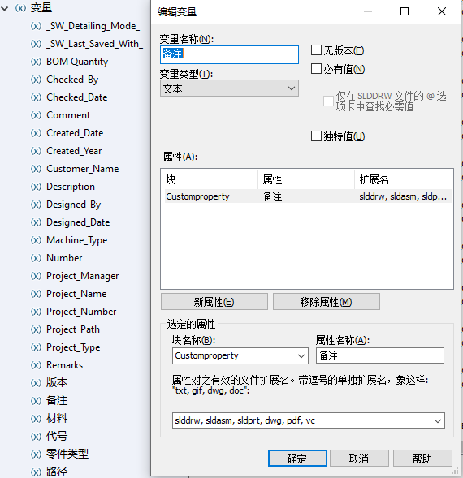
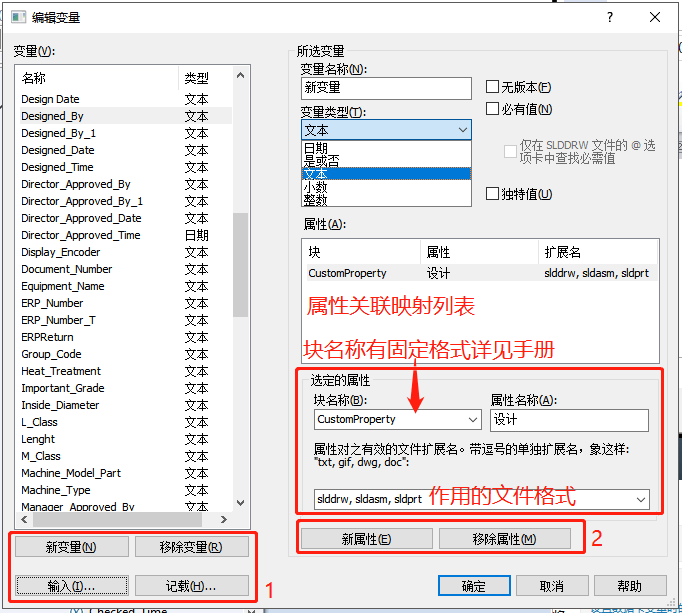
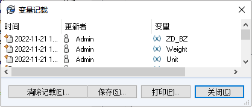
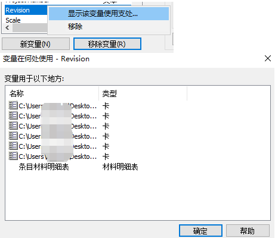

SOLIDWORKS-PDM变量
新增变量
1、
属性：
新变量：新变量编辑在右侧“所选变量”，类型如图（一般可用文本类型）变量映射
变量属性
编辑变量
1-4 记载：变量修改记录
2-2 移除属性：需要断开属性引用，
- 无版本（自由版本）
可以在重新检入时更新文件的变量，无需检出文件并升级文件的版本。这能够更新随时间更改的变量，例如成本，同时文件本身不会发生变化。此外，可以更改变量，即使文件处于没有权限检出的状态。
如果更新了已检出文件的自由版本变量或者通过工作流程流转操作，则文件会产生新的版本。
- 必有值
勾选后，检人或者更新数据卡时，该变量不能为“空”。如果已经有空属性的文件，则该选项不能被勾选，需要转移或在添加文件到库前，先勾选必有值选项。

- 独特值
当在变量属性内勾选“独特值”时，当更新或检入文件时，如果数据卡内引用了该变量，则会弹出一个警告信息提示，如图4-30 所示。
如果复制一个数据卡内包括独特值变量的文件，则会强行清除目标文件内的变量值，
变量映射
如图2：在“属性(A)”里，显示所选变量的属性/元数据属性映射内容。通过【新属性】和【移除属性】进行增减操作。
变量映射格式需要关联“特定格式文件”的块名称，以及其属性名称。大致说明如下：
块名称：包含属性/元数据（即属性）的文件部分。这个是有格式要求的，可见帮助手册。
属性名称：标识特定块中包含属性值的部分。
文件扩展名：输入支持块/属性映射的文件扩展名。扩展名之间用逗号分隔。